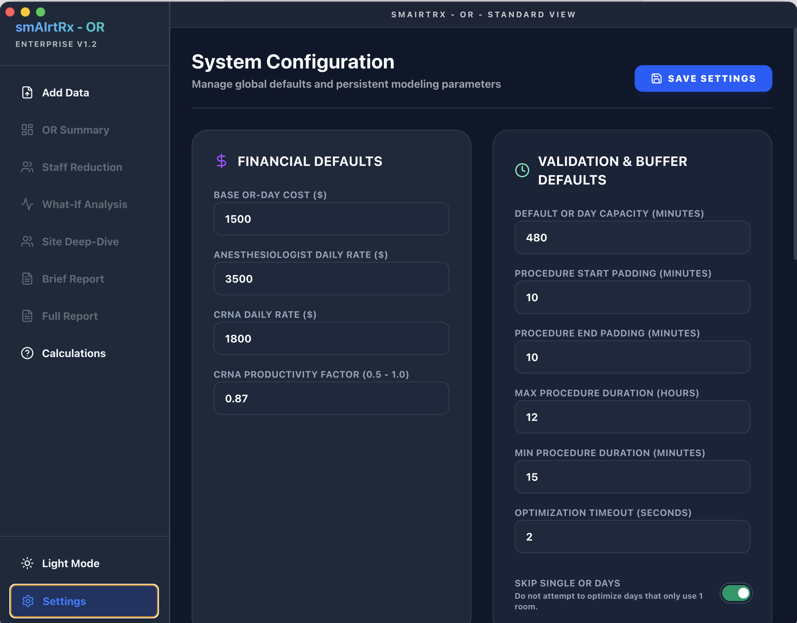

smAIrtRx OR Optimizer User Guide
Welcome to the smAIrtRx OR Schedule Optimizer. This guide will walk you through the primary workflow to analyze your Operating Room utilization and discover efficiency opportunities.
1 Open a File
Navigate to the Add Data tab in the sidebar. Click on the upload area or drag and drop your OR utilization CSV file.
 Initial Startup Screen: Ready to ingest surgical case data.
Initial Startup Screen: Ready to ingest surgical case data.
Case_ID, Date, Site, and Patient_In/Out times.
2 Validate File
Once a file is loaded, click the Validate File button. The system will scan your data for structural errors, missing headers, or logical inconsistencies (e.g., overlapping cases in the same room).
 Data Validation: Identifying structural issues and data quality.
Data Validation: Identifying structural issues and data quality.
Review the validation report. If major errors are found, you may need to click Clean & Normalize to automatically fix common issues before proceeding.
3 Analyze File
After successful validation, click Run Optimization Analysis. The Java-based optimization engine (powered by Google OR-Tools) will process your schedule to find the minimum number of ORs required to support your volume.
 OR Summary Dashboard: Aggregated savings and efficiency metrics.
OR Summary Dashboard: Aggregated savings and efficiency metrics.
Once complete, you will be automatically redirected to the Report to view the executive summary.
4 Staff Analysis
The Staff tab provides a deep dive into anesthesia staffing efficiency, separating clinical demand from scheduled supply across regional pools. You can also adjust the CRNA Hourly Rate slider to see direct financial impacts.
 Staffing Analysis: Identifying professional labor efficiency.
Staffing Analysis: Identifying professional labor efficiency.
5 Site Deep-Dive
Use the Site Deep-Dive visualizer to see exactly how cases were moved to consolidate rooms. This interactive view allows you to verify the solver's decisions for any site and date.
 Visual Packing: A detailed view of case consolidation.
Visual Packing: A detailed view of case consolidation.
6 What-If Analysis
Switch to the What-If Analysis tab. Here you can adjust key parameters to see their impact on savings in real-time:
 Scenario Modeling: Real-time simulation of different operational constraints.
Scenario Modeling: Real-time simulation of different operational constraints.
- OR Day Capacity: Change the standard workday length (e.g., 8 hours vs. 10 hours).
- Start/End Padding: Adjust the buffer time required for turnovers.
- Anesthesia Staffing: Toggle specific staffing roles (Anesthesiologists, CRNAs) and optimization methods (Absorption, FTE Efficiency) to see the financial impact.
- CRNA Parameters: Adjust the productivity factor (default 85%) and hourly rate to align with regional labor market conditions.
Click Update Statistics after changing physical constraints (like Capacity or Padding) to re-run the solver.
7 Reporting
The system provides two levels of reporting:
- Brief Report: A high-level executive summary designed for quick distribution.
- Full Report: A comprehensive audit-ready document containing mathematical proofs and site-by-site breakdowns.
- Strategic CFO Package: Click Export CFO Report to generate a board-ready ZIP archive including specialized roadmap summaries, "Hard vs. Soft" savings analysis, and a cost-of-inaction (Daily Leakage) report.
 Brief Report: Key operational and financial indicators.
Brief Report: Key operational and financial indicators.
 Full Audit Report: Deep-dive verification for hospital leadership.
Full Audit Report: Deep-dive verification for hospital leadership.
8 Calculation Methodology
For complete transparency, the Calculations screen provides the exact formulas used to derive every metric in the application.
 Technical Documentation: Ensuring confidence in the underlying math.
Technical Documentation: Ensuring confidence in the underlying math.
9 System Configuration
Navigate to the Settings tab to manage persistent system configuration:
 Global Configuration: Mapping headers and setting financial defaults.- Column Mapping: Map your specific CSV headers to the system's expected fields.
- Financial Defaults: Set the baseline daily rates for OR rooms, providers, and configurable CRNA hourly rates.
- Regional Clusters: Define groups of sites that can share resources for hub-and-spoke optimization.
- CFO Report Path: Customize the output location for the board-ready strategic report package.
Click Save Configuration to apply these changes across the entire application.